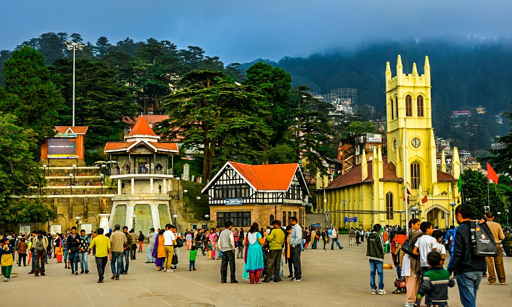
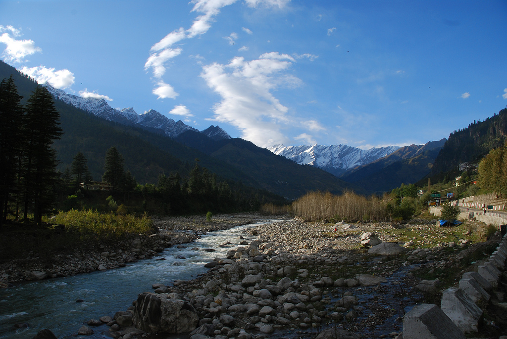
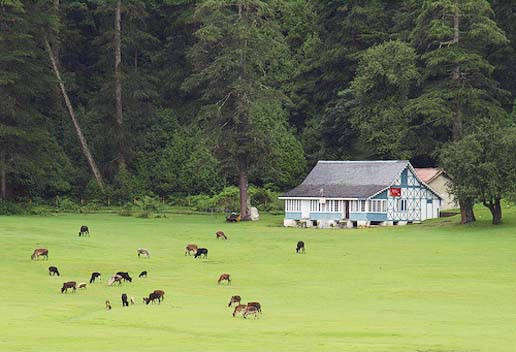
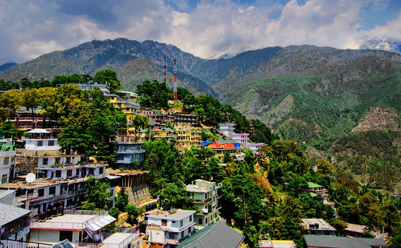

1. Shimla
Out of all the places, Shimla is one of the perfect places to wander around and have an adventure. It is the capital and
largest city of Himachal Pradesh. This Queen of Hills is a gorgeous station, and the scenic landscapes add value to its beauty.
Some of the popular attractions of Shimla are the town hall, Christ Church, Ridge Road, Gaiety Theatre. These places make Shimla
one of the most loved places in the Himachal. Shimla is the best place to visit in Himachal Pradesh in December because as the winter
gets in, the whole Shimla gets covered in snow.The stunning landscape is a mixture of Indian and British taste. Whether you plan
to enjoy yourself with your family or friends, this place is an ideal place. The best time to visit Shimla is during snowfall that
is from November to January.

2. Manali
The impressive and captivating scenes of the Manali make it the best places to visit in Himachal Pradesh .
It is one of the beautiful places in Himachal, and you can even bring the treat by indulging in sports activities.
This top tourist place is for everyone who loves natural beauty.Located near Kullu valley, Manali has many famous places
to visit in the nearby areas. The pine forests and rivers in the surrounding add a magical value to it. Other than all
the factors, the pleasant atmosphere is the most prominent factor that inspires the tourists. You can visit the Manali
bird sanctuary and make your vacation a perfect one.

3. Dalhousie
If you are looking for a holiday destination and can’t find the best places to visit in Himachal Pradesh with friends,
Dalhousie is a perfect place. During the winter season, the whole area gets covered with snow, and the white blankets
keep on mesmerizing the visitors.Everyone most loves it because of its historic buildings, and the hill station of Dalhousie
is a favorite place for photographers and wildlife. Enjoy nature while sitting back and relaxing in a calm environment.
Outdoor activities like camping, river rafting, and kayaking will add extra fun to your life.

4. Dharamshala
Dharamshala is another one of the best places to visit in Himachal Pradesh. This town situated in the Kangra valley has
different architectural attractions and cultural beauty. The lush pine forests and white peaks of mountains in a perfect
climate are all you need for your vacations.If you are looking for the best places to visit in Himachal Pradesh in January,
Dharamshala shouldn’t be ignored. Whether you love to travel with friends or you are a solo traveler, this place will be
super mesmerizing for you. The famous nearby places are Khajjiar, Bir Billing, and Palampur.Restaurants and cafes are
everywhere; you will love the Indian and Tibetan cultures. The scenic valleys, waterfalls, and trekking trails of this
area are famous among the world.